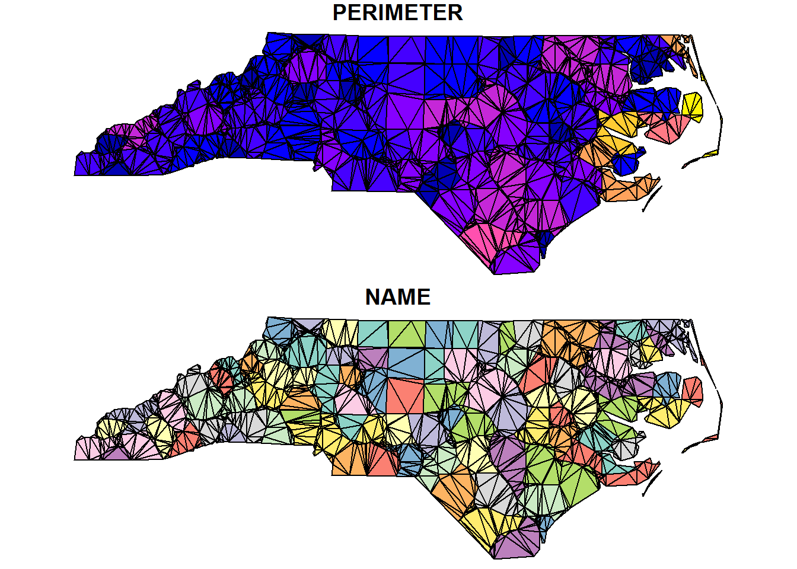
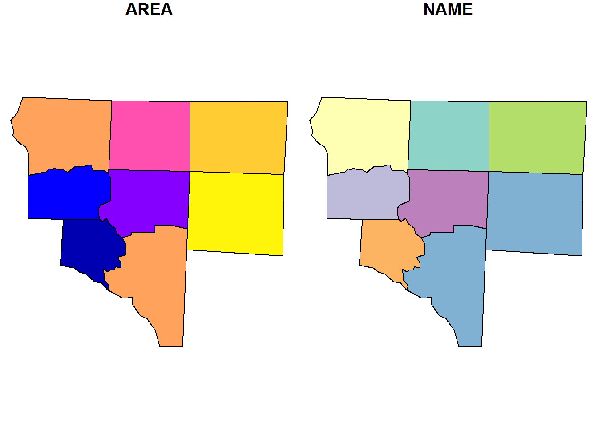
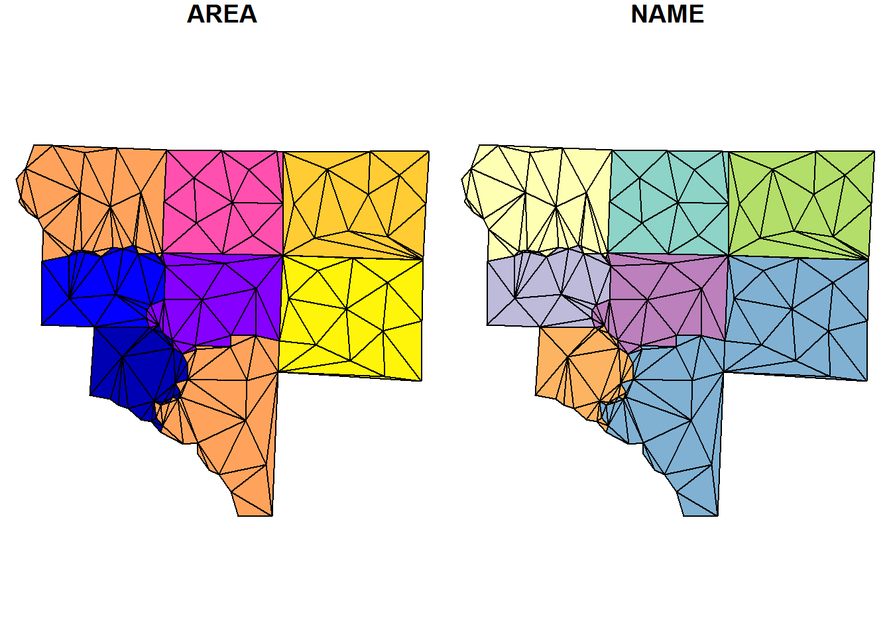
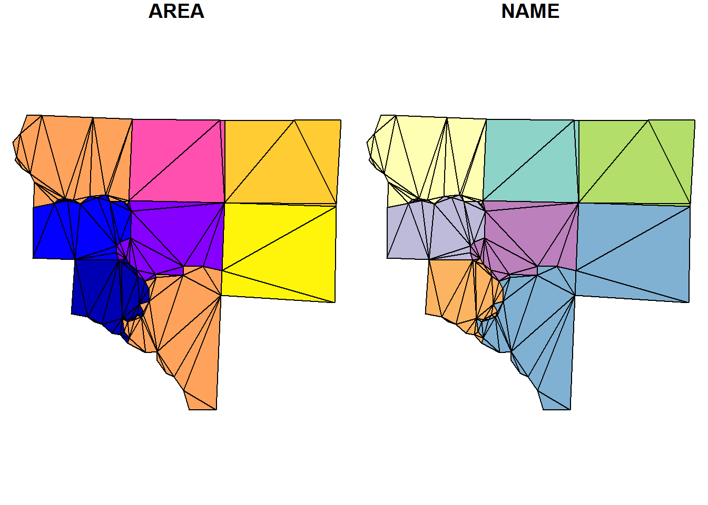
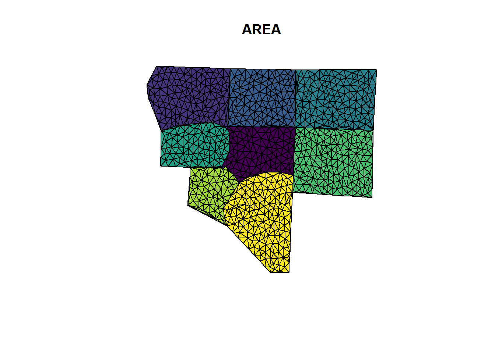

This is a basic example which shows you how to decompose a MULTIPOLYGON sf data frame object into a GEOMETRYCOLLECTION sf data frame object made of triangles:
library(sf)
library(sfct)
nc <- st_read(system.file("shape/nc.shp", package="sf"))## Reading layer `nc' from data source `C:\Users\mdsumner\Documents\R\win-library\3.3\sf\shape\nc.shp' using driver `ESRI Shapefile'
## converted into: MULTIPOLYGON
## Simple feature collection with 100 features and 14 fields
## geometry type: MULTIPOLYGON
## dimension: XY
## bbox: xmin: -84.32385 ymin: 33.88199 xmax: -75.45698 ymax: 36.58965
## epsg (SRID): 4267
## proj4string: +proj=longlat +datum=NAD27 +no_defsnc_triangles <- ct_triangulate(nc)
plot(nc_triangles[, c("PERIMETER", "NAME")])
We can use the underlying RTriangle::triangulate arguments to hone the triangles we get.
i_feature <- 25
nc1 <- nc[c(i_feature, unlist(st_touches(nc[i_feature, ], nc))), ]## although coordinates are longitude/latitude, it is assumed that they are planarplot(nc1[, c("AREA", "NAME")])
## subvert st_area because we really don't want m^2
st_crs(nc1) <- NA
areas <- st_area(nc1)
st_crs(nc1) <- st_crs(nc)
nc1_triangles <- ct_triangulate(nc1, a = min(areas)/5)
plot(nc1_triangles[, c("AREA", "NAME")])
nc2_triangles <- ct_triangulate(nc1, a = min(st_area(nc1))/25)
plot(nc2_triangles[, c("AREA", "NAME")])
Get a grouped triangulated set from a MULTIPOINT. Note how these aren’t constrained by the edges of the input polygons (because we threw those away!) but these are controlled to have a smaller maximum area.
Area is calculated in the native coordinates, assuming “planar coordinates”, with no respect to the real world.
mtriangs <- ct_triangulate(st_cast(nc1, "MULTIPOINT"), a = 0.001)
plot(mtriangs[, 1], col = viridisLite::viridis(nrow(mtriangs)))